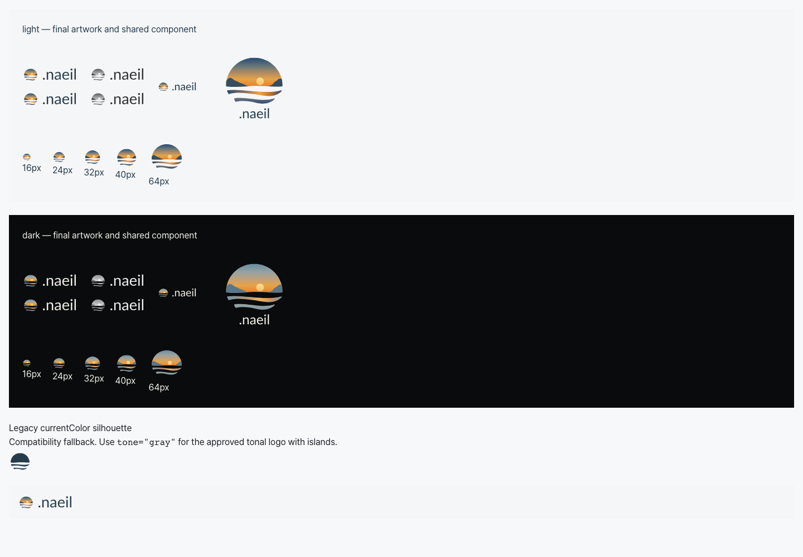
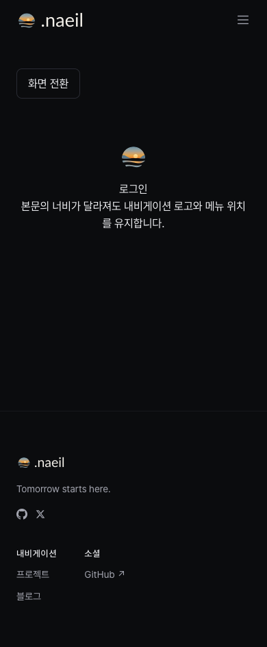

2026-10-11 · 브랜드 1.1.0 · 공용 UI 변경은 unreleased
기존 Git 기록에서 앞의 마침표에 담긴 의미를 확인한 뒤, 사용자가 이를 유지하기로 결정했다. Lato Regular 400의 실제 마침표와 기본 조판 간격으로 모든 워드마크를 .naeil로 갱신했다. 심볼 단독·아이콘·색상은 1.0.1과 동일하다.
brand/current.json은 1.1.0을 선택한다. 앞선 1.0.0·1.0.1은 변경하지 않았다. 새로 전달할 파일은 브랜드 1.1.0 ZIP이며, 사용 가이드와 독립 파일 검수를 포함한다.
검수한 헤더와 푸터에서 마침표가 글자와 구분되며 메뉴·콘텐츠와 겹치지 않았다. 헤더 폭은 96.94px, 푸터는 70.10px다. 로고 원본과 공용 컴포넌트는 같은 그래픽이며, 렌더 경로의 소수점 크기 차이 때문에 픽셀 단위 캡처의 완전 일치를 주장하지 않는다.

모바일 어두운 테마의 공용 Nav·Footer:

이번 검수는 로고 파일, 실제 Storybook 컴포넌트와 독립 소비 프로젝트에 대한 결과다. 실제 사이트 동적 홈페이지·로그인의 Supabase 설정 누락은 이전 통합 검수에서 확인한 미해결 환경 제한이며, 이번에 해소했다는 뜻이 아니다. Firefox·실제 Safari/iPhone·인쇄·새 상표 검토는 포함하지 않는다.
이번에는 로컬 Git, logo-icon-design, HarfBuzz/fontTools/librsvg/Pillow, Playwright Chromium/WebKit, 빌드·타입·패키지 검사만 사용했다. 외부 디자인 도구나 새 연구를 실행하지 않았다. naeil.dev 배포와 npm 게시는 수행하지 않았다.